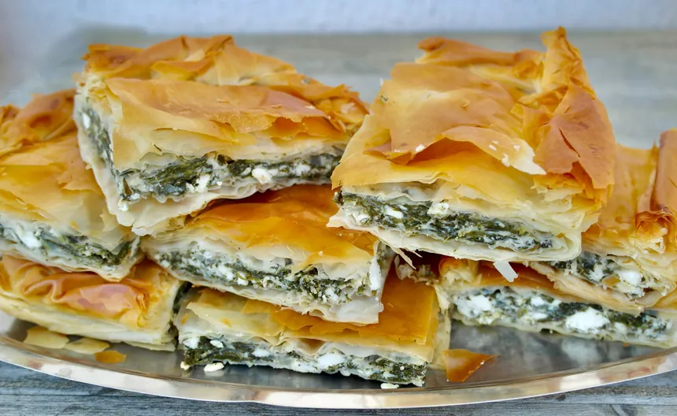

Spanakopita recipe

Description
Spanakopita is a Greek spinach pie. It often contains cheese, typically feta, and may even be called spanakotiropita, especially in northern Greece.
A version without cheese and eggs is eaten during religious fasts throughout Greece. Spanakopita appears in many traditional Greek cookery books and appears in numerous restaurants and hotel menus througout Greece and internationally
Ingredients
- 4 tablepoons of olive oil
- 2 yellow sliced onions
- 1 kg frozen spinach
- 1 small bunch of mint
- 1 small bunch of dill
- 1 bunch of flat-leaf parsley
- 3 eggs
- 200g of Feta
- Salt
- Pepper
- 10 filo sheets
Steps
To prepare the garnishing
- Heat a large frying pan over medium-high heat and sauté the sliced onions for about ten minutes.
- Defrost the spinach (steam it, or just take it out of the freezer the day before).
- When the onions are golden, add the drained spinach and sauté for a further ten minutes.
- Meanwhile, remove the leaves from the mint, then chop all the herbs together (keep the small stems of the dill and parsley, and discard the large stems at the base).
- Add the chopped herbs to the pan and sauté for a further 5 minutes.
- Beat the 3 eggs in a bowl, and add salt and pepper.
- Crumble the feta block with your fingertips to obtain pieces of uneven size.
- Remove the pan from the heat. Pour in the eggs and stir to blend.
- Add the crumbled feta and mix again.
To make the spanakopita
- Preheat oven at 190°C
- Pour 5 tablespoons of olive oil into a bowl, and take a brush.
- Choose a dish slightly smaller than the filo sheets.
- Oil the bottom and sides of the dish
- Place a sheet of filo in the bottom of the dish (and on top of the bors), crumpling it so that it fits into the dish.
- Using the brush, dab the sheet with oil.
- Put on the next sheet and stamp again
- Then a 3rd sheet
- Pour in the rest of the filling, then arrange the remaining 5 leaves on top, again passing the brush of oil between each one.
- Oil the last leaf well
- Using a knife, square off the top leaves. This will prevent the leaves from flying off during cooking and, above all, will prevent you from disturbing the whole leaf when you cut it when you take it out of the oven.
- Bake at half-height for 30 minutes
- Allow to cool before serving
If you want to try other recipes, click here